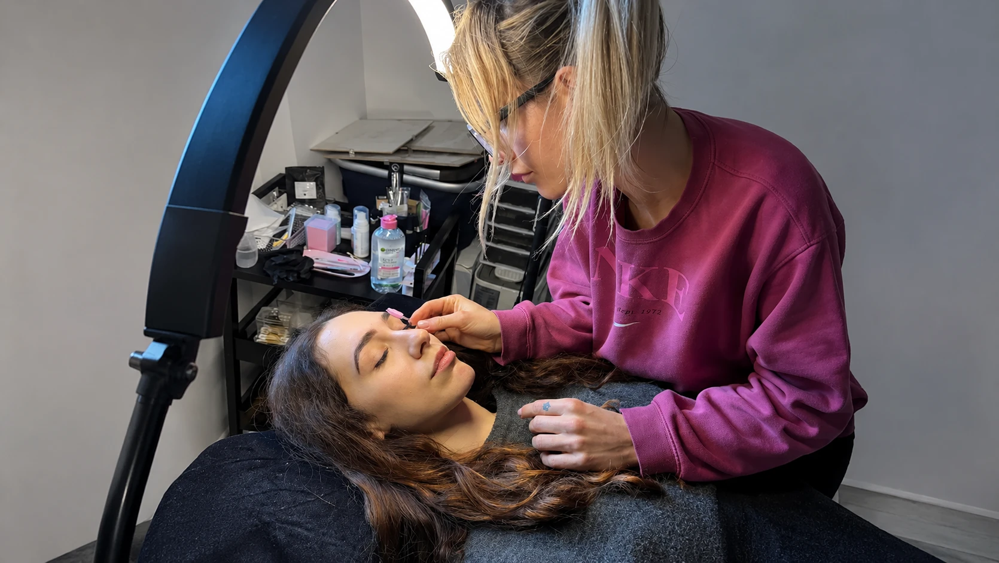
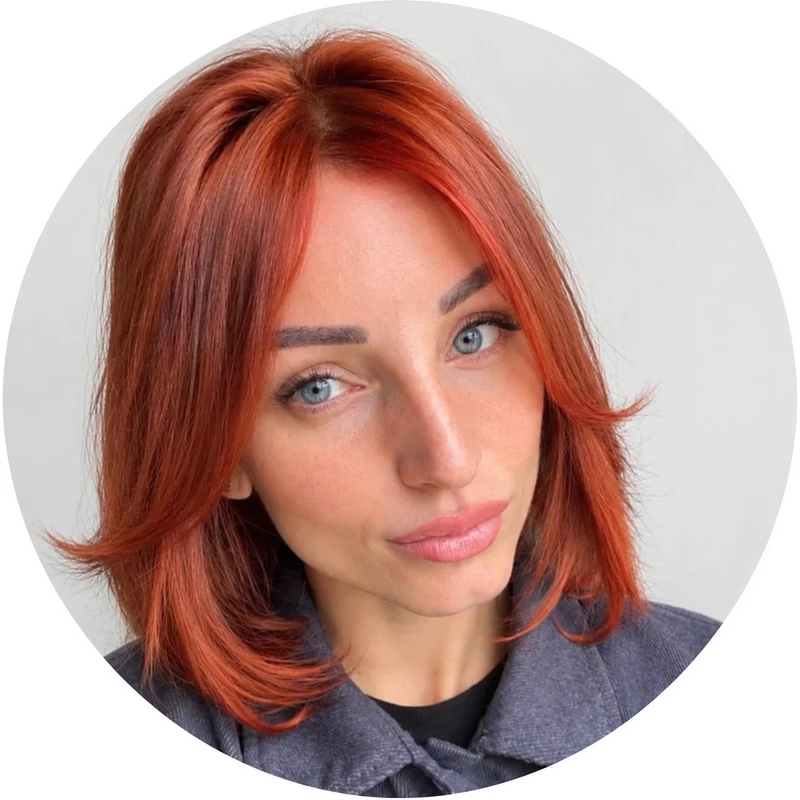
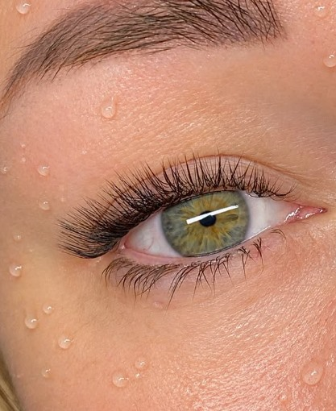
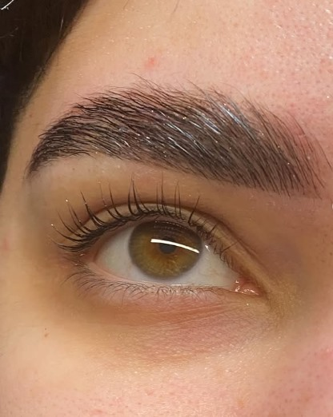

A chi ama la naturalezza
Desideri uno sguardo più definito e luminoso, senza rinunciare alla delicatezza dei tuoi lineamenti? Possiamo individuare insieme un trattamento che valorizzi ciò che hai già.

Giulia Fumanti Lash & Brow Specialist
Extension ciglia, laminazione e trattamenti dedicati allo sguardo, studiati per valorizzare la tua bellezza naturale con precisione, armonia e attenzione ai dettagli.
Roma · Pisana / Bravetta

Piacere, sono Giulia
Mi chiamo Giulia Fumanti e sono una Lashmaker e Lamimaker a Roma.
Nel mio lavoro mi dedico alla valorizzazione dello sguardo attraverso trattamenti personalizzati, pensati per rispettare le caratteristiche e l'armonia di ogni viso.
Credo che ogni sguardo sia unico e che proprio per questo non debba esistere un risultato uguale per tutte.
Mi piace curare ogni dettaglio: dalla scelta dell'effetto alla definizione delle ciglia, fino alla ricerca di un risultato che faccia sentire ogni cliente a proprio agio.
La precisione tecnica, la passione e la voglia di continuare a imparare accompagnano il mio percorso professionale.
Il mio obiettivo è semplice: valorizzare ciò che ti rende unica, senza stravolgere la tua naturale bellezza.
Uno sguardo, mille sfumature
Desideri uno sguardo più definito e luminoso, senza rinunciare alla delicatezza dei tuoi lineamenti? Possiamo individuare insieme un trattamento che valorizzi ciò che hai già.
Vorresti ciglia più evidenti, uno sguardo più espressivo o un effetto mascara? La scelta delle extension e del loro stile parte sempre dalle caratteristiche dei tuoi occhi.
Preferisci lavorare sulle tue ciglia senza ricorrere alle extension? La laminazione può essere un'opzione da valutare per esaltarne curvatura e definizione.
Il mio approccio
Per me un trattamento ben riuscito non segue uno schema standard. Nasce dall'ascolto, dall'osservazione e dalla scelta attenta dei dettagli che possono valorizzare ogni singolo sguardo.
Comprendere le tue preferenze e il risultato che desideri ottenere.
Valutare la forma dell'occhio e le caratteristiche delle ciglia per individuare l'effetto più adatto a te.
Curare lunghezze, curvature e definizione, aggiornandomi di continuo su tecniche e tendenze del settore lash.
Valorizzare il tuo sguardo con attenzione a ogni dettaglio, senza imporre un unico ideale estetico.
I miei trattamenti
Ogni trattamento è un'occasione per esaltare la tua bellezza attraverso un risultato studiato con attenzione, precisione e sensibilità estetica.

Extension Ciglia
Lunghezza, curvatura e volume disegnati sul tuo sguardo.
Un trattamento personalizzato per valorizzare lo sguardo attraverso lunghezze, curvature ed effetti scelti in base alle caratteristiche dei tuoi occhi e al risultato desiderato.
Dalle soluzioni più naturali agli effetti più intensi, ogni applicazione viene studiata per creare armonia e definizione.
Tra gli effetti realizzati: Wet / Mascara e Volume 3D/4D.

Laminazione Ciglia e Sopracciglia
La tua bellezza naturale, definita e in armonia.
Un trattamento dedicato alla valorizzazione di ciglia e sopracciglia naturali, pensato per esaltarne visivamente curvatura, direzione e definizione.
Una soluzione da valutare per chi desidera uno sguardo più aperto, ordinato e armonioso, senza ricorrere alle extension.
Il tuo percorso
Contattami per spiegarmi quale risultato vorresti ottenere e ricevere le prime informazioni sui trattamenti.
Durante la consulenza ascolto le tue esigenze e osservo le caratteristiche del tuo sguardo.
Individuiamo la soluzione e l'effetto più adatti a te, concordando insieme il risultato.
Durante l'appuntamento il trattamento viene eseguito con attenzione ai dettagli e al risultato concordato.
Dove trovarmi
Ricevo a Roma, nella zona Pisana/Bravetta, esclusivamente su appuntamento.
Indirizzo
Roma — Zona Pisana / Bravetta
Domande frequenti
Con le extension applico ciglia artificiali sulle tue ciglia naturali per ottenere effetti di lunghezza, definizione o volume. Con la laminazione, invece, lavoro sulle tue ciglia naturali, valorizzandone curvatura e aspetto.
Valuto insieme a te il risultato che desideri e le caratteristiche delle tue ciglia, così da personalizzare la scelta in base alle tue esigenze.
La durata varia in base al trattamento, al ciclo naturale delle ciglia e alle caratteristiche individuali. Durante la consulenza ti darò indicazioni più precise.
Puoi contattarmi su Instagram, per telefono o tramite il modulo presente sul sito. Ricevo a Roma, in zona Pisana/Bravetta, solo su appuntamento.
In presenza di irritazioni, infezioni oculari, allergie note o altre problematiche, ti chiedo di comunicarmelo prima dell'appuntamento. Valuterò con te se il trattamento estetico è appropriato e, quando necessario, ti consiglierò di consultare un professionista sanitario.
Contattami